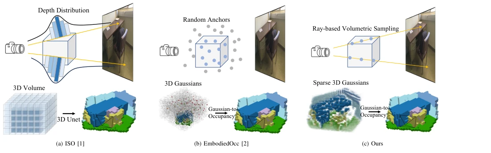
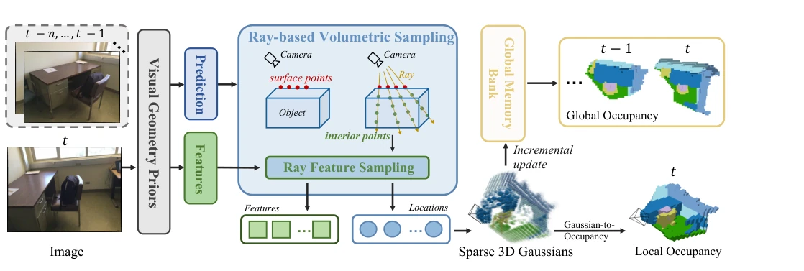
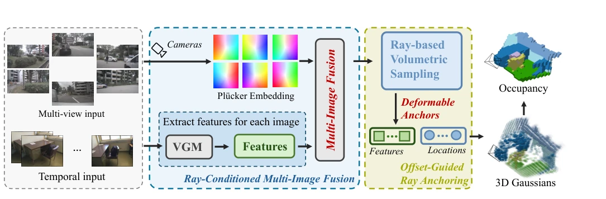
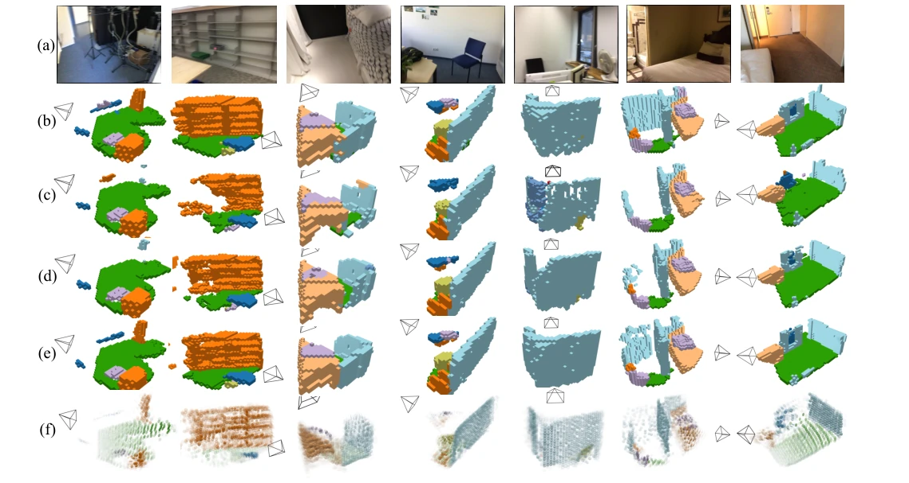
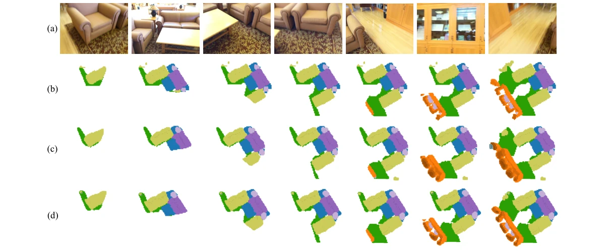
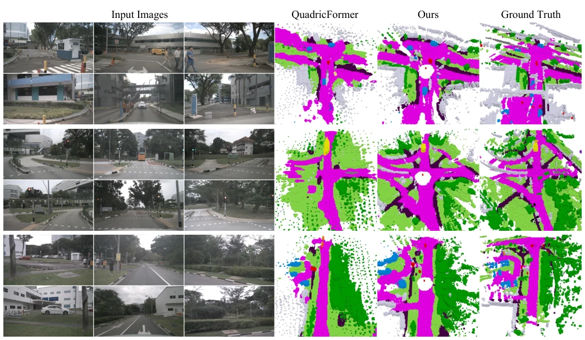
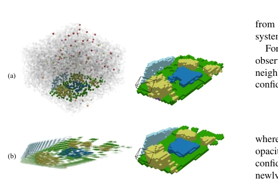

This work attempts to bridge the gap between visual geometric priors (typically surface-based) and voxel occupancy prediction using Gaussian representation. Although the approach is clever, utilizing ray sampling to 'stretch' surface points into voxels, it essentially relies on the quality of external depth models. GPOcc++ incorporates multi-view fusion and offset guidance, indeed improving accuracy, but whether the trade-off between computational overhead and dependency on prior models is worth it remains debatable. However, sparse Gaussians do save memory compared to dense voxels, which is commendable. It forces surface geometry into a volumetric framework; although effective, it may mask errors inherent in the depth model itself. For embodied intelligence, this surface-to-volume conversion is necessary, but whether accuracy improvement is linear with prior quality still needs observation.
研究动机Motivation
具身智能需要精确 3D 理解。现有方法如 ISO [1] 将深度估计转为密集体素，浪费大量算力在空白区域；EmbodiedOcc [2] 虽用高斯但锚点随机，效率低。视觉几何先验（如 DepthAnything）虽强，但仅输出表面点，无法推理遮挡和内部空间。如何把表面先验转化为体积表示是核心痛点。现有方法往往忽略几何先验的潜力，或者无法有效利用多视图信息，导致在复杂遮挡场景下表现不佳。此外，现有方法在处理动态场景时往往缺乏时序一致性，难以构建连贯的全局场景模型。
Embodied intelligence requires precise 3D understanding. Existing methods such as ISO [1] convert depth estimation into dense voxels, wasting significant compute power on empty regions; EmbodiedOcc [2] uses Gaussians but with random anchors, resulting in low efficiency. Visual geometric priors (such as DepthAnything) are powerful, but only output surface points, unable to reason about occlusions and internal spaces. How to convert surface priors into volumetric representations is the core pain point. Existing methods often ignore the potential of geometric priors, or fail to effectively utilize multi-view information, leading to poor performance in complex occlusion scenarios. Furthermore, existing methods often lack temporal consistency when handling dynamic scenes, making it difficult to construct coherent global scene models.

Fig. 1: Comparison of monocular occupancy prediction pipelines. ISO [1] formulates depth estimation as a multi-class classification problem, using the predicted depth distributions to lift 2D image features into dense 3D volumes, which are then processed by a 3D U-Net for occupancy prediction. EmbodiedOcc [2], by contrast, initializes random 3D anchors and applies cross-attention to aggregate image features, predicting Gaussian primitives that are splatted into voxels. Many of these Gaussians fall in empty regions, shown as gray primitives. In contrast, GPOcc employs ray-based volumetric sampling to generate sparse Gaussians concentrated on or within objects, producing a compact and efficient representation for occupancy.
Overall flow: Image input -> Surface extraction from geometric prior -> Ray voxel sampling -> Gaussian attribute prediction -> Occupancy aggregation. The core of GPOcc is ray sampling, generating multiple anchors along camera rays, rather than single points. GPOcc++ introduces Ray-Conditioned Multi-Image Fusion, using Plücker encoding to fuse multi-view features; Offset-Guided Ray Anchoring predicts 3D offsets to correct anchor positions. Finally, occupancy is derived through probability aggregation, supporting streaming incremental updates. In addition, an opacity pruning mechanism is introduced to remove low-contribution Gaussians, further compressing the representation. This mechanism allows the model to dynamically adjust Gaussian distributions during inference, adapting to object structures at different scales while maintaining computational efficiency.

Fig. 2: Overview of GPOcc. Given an RGB image, a visual geometry prior predicts surface geometry and extracts 3D- aware features. Ray-based volumetric sampling extends the predicted surface points into interior volumetric anchors, which are represented by sparse semantic Gaussian primitives. The resulting Gaussians are probabilistically mapped to local occupancy. For streaming observations, per-frame Gaussian predictions are incrementally integrated into a global memory bank to reconstruct coherent scene-level occupancy.

Fig. 4: Overview of GPOcc++. Given temporal or multi-view images, a visual geometry model extracts per-image features and surface predictions, while Pl¨ucker embeddings encode the corresponding camera rays. Ray-Conditioned Multi-Image Fusion models cross-view or cross-temporal relationships in a unified feature space. The surface predictions define initial ray-based volumetric anchors, and the fused features condition Offset-Guided Ray Anchoring and Gaussian attribute prediction. The refined sparse Gaussians are subsequently mapped to semantic occupancy using the same probabilistic formulation as GPOcc.
Tested on Occ-ScanNet, EmbodiedOcc-ScanNet, and nuScenes. GPOcc++ (VGGT) achieves an mIoU of 57.41 on Occ-ScanNet, surpassing EmbodiedOcc++. Ablation studies show that both ray sampling and fusion modules are effective. Performance is robust on nuScenes, demonstrating generalization. Compared to dense voxels, sparse Gaussians significantly reduce redundancy while maintaining accuracy. Experiments also validate the effectiveness of the streaming update strategy on sequence data, capable of gradually building global scene representations. On the nuScenes dataset, the method also shows significant improvement on categories such as driving surface and sidewalk, indicating it can capture richer semantic details.

Fig. 5: Qualitative comparison on monocular occupancy prediction. (a) shows the input RGB images, (b) the ground-truth occupancy, (c) the predictions of EmbodiedOcc [2], (d) the predictions of GPOcc, (e) the predictions of GPOcc++, and (f) the Gaussian primitives predicted by GPOcc++. Compared to EmbodiedOcc and GPOcc, GPOcc++ produces more accurate and complete reconstructions, while the Gaussian representation provides interpretable intermediate geometry.

Fig. 6: Qualitative results on streaming inputs. (a) shows the input RGB images, (b) the ground-truth occupancy, (c) the predictions of GPOcc, and (d) the predictions of GPOcc++. Our incremental update strategy progressively integrates information from sequential frames, and GPOcc++ produces more complete and consistent predictions.

Fig. 7: Qualitative results on nuScenes. We visualize surround-view camera inputs, the semantic occupancy predicted by GPOcc++, and the corresponding ground-truth occupancy in outdoor driving scenes.
其他图片Other Figures

Fig. 3: Comparison of Gaussian representations. (a) Em- bodiedOcc places many Gaussian primitives in empty regions, shown in gray. (b) GPOcc concentrates sparse Gaussians on and within occupied structures, resulting in a more compact representation.